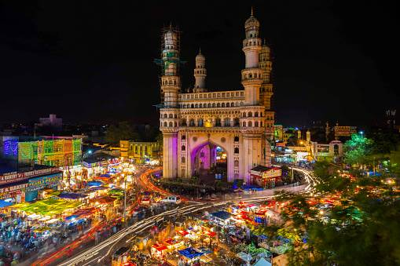
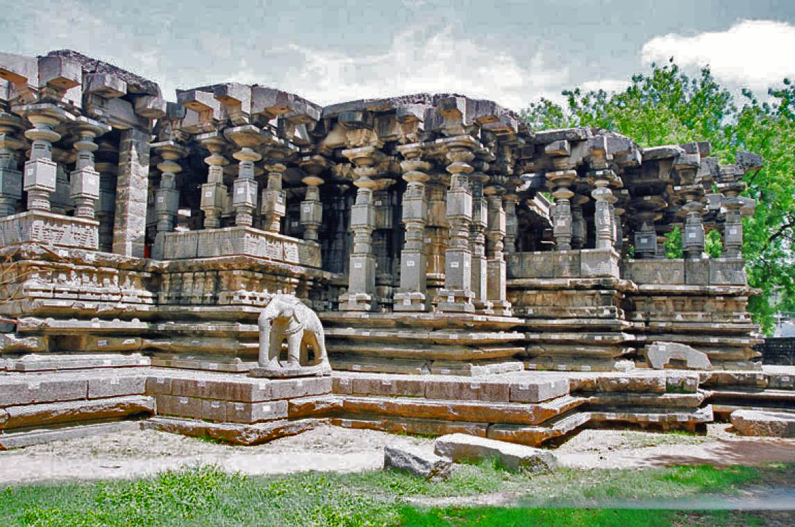
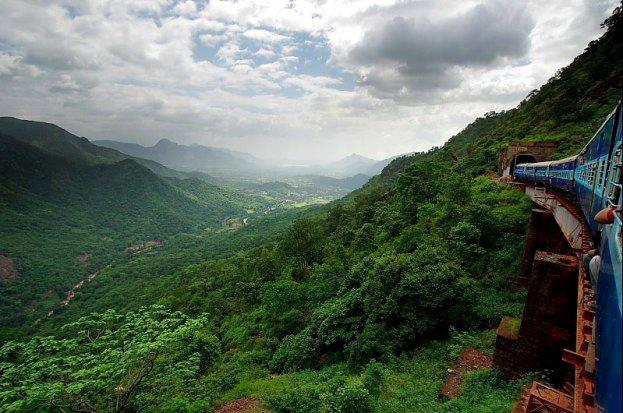

Charminar

The Charminar is a monument located in Hyderabad, Telangana, India. Constructed in 1591, the landmark is a symbol of Hyderabad and officially incorporated in the emblem of Telangana.[3] The Charminar's long history includes the existence of a mosque on its top floor for more than 425 years. While both historically and religiously significant, it is also known for its popular and busy local markets surrounding the structure, and has become one of the most frequented tourist attractions in Hyderabad. Charminar is also a site of numerous festival celebrations, such as Eid-ul-adha and Eid al-Fitr,[4] as it is adjacent to the city's main mosque, the Makkah Masjid.
Timings: 9am to 5:30pm
Price-: Indians 25/- Foreigners 300/-
Salarjung Museum

The Salar Jung Museum is an art museum located at Dar-ul-Shifa, on the southern bank of the Musi River in the city of Hyderabad, Telangana, India. It is one of the notable National Museums of India.[1] Originally a private art collection of the Salar Jung family, it was endowed to the nation after the death of Salar Jung III. It was inaugurated on 16 December 1951.
It has a collection of sculptures, paintings, carvings, textiles, manuscripts, ceramics, metallic artefacts, carpets, clocks, and furniture from Japan, China, Burma, Nepal, India, Persia, Egypt, Europe, and North America. It is one of the largest museums in the world.[2]
Timings : 10am to 5pm
Price-: Indians 20/- Foreigners 500/-
Golconda

Golconda is a historic city and fortress in the Indian state of Telangana, near Hyderabad. It was once the capital of the medieval Golconda Sultanate and is renowned for its impressive fortifications, which include massive walls, gates, and bastions. The Golconda Fort, built in the 16th century, is known for its acoustic system, which allows a clap at one end of the fort to be heard at another, distant end.
Golconda was also a major diamond trading center, and the famous Golconda diamonds, including the Koh-i-Noor and the Hope Diamond, were mined in the region. The city is now a popular tourist destination, attracting visitors with its historical architecture and cultural significance.
Timings : 8:30am to 5:30pm
Price-: Indians 35/- Foreigners 300/-
Birla Mandir

Birla Mandir is a Hindu temple built on a 280 feet (85 m) high hillock called Naubath Pahad on a 13 acres (53,000 m2) plot in Hyderabad, Telangana, India. The construction took ten years and was opened in 1976 by Swami Ranganathananda of Ramakrishna Mission. The temple was constructed by the Birla Foundation, which has also constructed several similar temples across India, all known as Birla Mandir.
Timings: 7am to 12pm Noon and 2pm to 9pm
Thousand Pillar Temple

The Thousand Pillar Temple or Rudreswara Swamy Temple[1] is a historical Hindu temple located in the town of Hanamakonda, Telangana State, India.[2] It is dedicated to Lord Shiva, Vishnu and Surya. Thousand Pillar Temple, along with Warangal Fort, Kakatiya Kala Thoranam and Ramappa Temple are added to the tentative list of World Heritage sites recognised by UNESCO.[3]
Timings: 5am to 9pm
Yadigirigutta
The Sri Lakshmi Narasimha Swamy Temple (Telugu: శ్రీ లక్ష్మీ నరసింహ స్వామి వారి ఆలయం,యాదగిరిగుట్ట) or simply known as Yadadri or Yadagirigutta temple,[1] (also known as Pancha Narasimha Kshetram and Rishi Aradhana Kshetram)[2] is a Hindu temple situated on a hillock in the small town of Yadagirigutta in the Yadadri Bhuvanagiri district of the Indian state of Telangana. Yadadri temple is touted as Telangana's own Tirupati.[3] The temple is dedicated to the god Narasimha, an avatar of Vishnu.
Timings: 6am to 9pm
Ananthgiri Hills
Within 100 km from Hyderabad, the Ananthagiri Hills is the perfect weekend destination near Hyderabad. It can be reached in around 2.5 hours from Hyderabad. The hill station is covered with dense jungles, streams, lakes, and waterfalls ideal for a refreshing trip in the lap of nature.
It offers travelers a host of activities like trekking along the numerous trails, camping by the lakeside near Kotipally Reservoir, and kayaking in the Nagasamudram Lake. You can also enjoy nature walks along the jungle, and enjoy a bird’s eye view of the city from Godamguda Viewpoint. You can seek blessings at the 400-year-old Sri Anantha Padmanabha Swami Mandir, which is dedicated to Lord Vishnu.
Araku Valley

Araku Valley is a cultural treasure. The misty valleys and green forest slopes are home to some of the most vibrant indigenous tribes of the Eastern Ghats, and one can get a glimpse of these communities at the tribal museum. Araku Valley is also a major biodiversity hotspot. If you are a wildlife and nature enthusiast, enjoy some of the forest trails (with a guide, of course) and keep an eye out for wild animals. The coffee plantations in the valley also provide a serene backdrop for nice, early evening walks. There is even a coffee museum where you can learn more about the local industry and way of life. Imagine waking up in the morning and feeling the breeze that carries the whiff of coffee!
Kuntala Waterfalls
Kuntala Waterfall is a waterfall of Telangana state in India, located on Kadam river in Neradigonda mandal of Adilabad district.[1] It is the highest waterfall in the state with a height of 150 meters.[2] There is a story behind the name of this waterfall as 'Kuntala'.It is said that Dusyanthu's wife Shakuntala was mesmerized by the beauty of nature here and she used to bathe in this waterfall all the time. Locals say that the name of 'Shakuntala' has changed to 'Kuntala'.
Wonderla

Wonderla is a popular chain of amusement and water parks in India, with locations in Bangalore, Kochi, and Hyderabad. Founded in 2002 by the Wonderla Holidays Limited, the parks offer a wide range of attractions, including thrilling rides, water slides, and entertainment shows.
Wonderla parks are known for their clean, well-maintained environments and a variety of attractions suitable for all ages. Each park features a mix of high-energy rides, family-friendly attractions, and water-based fun, making them popular destinations for families and tourists seeking recreation and adventure.
Timings: 11am to 6pm
Price 1200/-
District Gravity

District Gravity is a gravity-defying amusement park attraction located in Wonderla amusement parks in India. It is designed to create a sensation of weightlessness and floating, using advanced technology to simulate the effects of gravity in a controlled environment. Visitors experience this unique sensation through various rides and interactive experiences that challenge their sense of balance and spatial orientation. It’s part of Wonderla’s broader range of thrill rides and attractions aimed at providing an exciting and memorable experience for visitors.
Price: 100/-
Snow World

Snow World is an indoor snow park located in Hyderabad, India. It provides a unique experience by offering a winter wonderland in a tropical climate. The facility features artificial snow, allowing visitors to enjoy snow-based activities such as snowball fights, sledding, and ice skating, regardless of the weather outside.
Opened in 2004, Snow World maintains a temperature of around -5°C to -10°C (23°F to 14°F) to create a genuine snowy environment. The park is popular for family outings, providing a fun and refreshing escape from the heat of the city
Timings: 11am to 9pm
Price: 450/-
Ramoji Film City
Ramoji Film City, located in Hyderabad, India, is one of the largest film cities in the world. Established in 1991 by Ramoji Rao, it spans over 2,000 acres and serves as a major hub for the Indian film industry, particularly for Telugu cinema. The facility includes numerous film sets, production facilities, and theme park attractions.
Ramoji Film City features a wide range of sets designed to replicate various locales, from bustling cityscapes to serene countryside. It also offers guided tours, making it a popular destination for tourists and film enthusiasts. The city is known for its state-of-the-art infrastructure and has hosted numerous film, television, and advertising productions.
Timings: 9am to 5:30pm
Price-: 1150/-
Qutub Shahi Tombs

The Qutub Shahi Tombs are located in the Ibrahim Bagh (garden precinct), close to the famous Golconda Fort in Hyderabad, India. They contain the tombs and mosques built by the various kings of the Qutub Shahi dynasty.[3] The galleries of the smaller tombs are of a single storey while the larger ones are two-storied. In the centre of each tomb is a sarcophagus which overlies the actual burial vault in a crypt below. The domes were originally overlaid with blue and green tiles, of which only a few pieces now remain.[4]
The complex was put by UNESCO on its "tentative list" to become a World Heritage Site in 2014, with others in the region, under the name Monuments and Forts of the Deccan Sultanate (despite there being a number of different sultanates).
Timings: 9:30am to 4:30pm
Price-: 10/-
Statue Of Equality

The Statue of Equality is a prominent monument located in Hyderabad, India. Unveiled in 2019, it stands as a tribute to Sri Ramanuja, an 11th-century philosopher and theologian who played a key role in promoting the concept of equality and social justice through his teachings.
The statue is 216 feet tall, including its base, making it one of the largest statues in the world. It is set in a complex that also includes a meditation hall, a Vedic library, and various educational and cultural facilities. The monument aims to honor Ramanuja's contributions to philosophy and spirituality while promoting his message of equality and unity among all people.
Timings: 5:30am to 8pm
Price-: 200/-